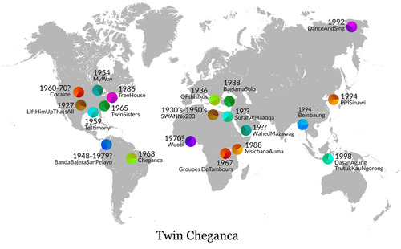

Twin Cheganca
Esta canción está compuesta con 31 loops procedentes de 21 canciones diferentes. En este mapa puedes ver de donde procede cada canción y su fecha de grabación.
This song is made with 31 loops from 21 different songs. On this map you can see where each song comes from, and the recording date.

Las 21 canciones usadas están en los siguientes discos:

Twin Sisters
Twin Sisters (recorded in 1965
in Sidna Meyer´s house by John Cohen)
Sidna Myers
ninehundredmilesfromhome
{kind=link}
{kind=link}
Dance And Sing
let us dance and sing a little
1992
Ekaterina Ivanova Tymkil
www.etnic.ru

Msichana Auma
14 - herbert misango - msichana auma
1988
{kind=link}
Beinbaung
08. Beinbaung - Hsaing Waing Ensemble
1994
ethnicfolkmusic
Cheganca
1968
Zelia Barbosa
cultdisc
Banda Bajera San Pelayo
Descarga en Cumbia
1948-1979?
Banda Bajera de San Pelayo
Buy
included in "Try Dance to this" Mixtape
tristeshumanistes

Wuobi
Wuobi (Akroma)
1970?
Ga-Mashiebii
included in "va -- Bei Mir Bist Du Schön!" Mixtape
tristeshumanistes
Listen in
Likembe´s Blog
{kind=link}
{kind=link}
{kind=link}
SWAN No 233
DABKA DANCE -- SWAN No 233
1930's-1950's
Semi Sheheen
included in "Fast Spinning Wax" Mixtape
tristeshumanistes
{kind=link}
Piri Sinawi
3. Piri-Sinawi
1994
myveryownjazzblog

Groupes De Tambours
16 Groupes de tambours royaux avec appels de trompes
1967
differentwaters
{kind=link}
Tree House
07 - tree house
1986
Arthur Russell
buffalotones
{kind=link}
Cocaine 1960-70
Abner Jay (info)
spacerockmountain
{kind=link}
{kind=link}
Surah Al Haaqqa
1-01 Surah Al-Haaqqa, Pt. 1 (Arabic; Egypt)
19??
Opika Pende: Africa at 78 rpm
Buy
{kind=link}
{kind=link}
{kind=link}